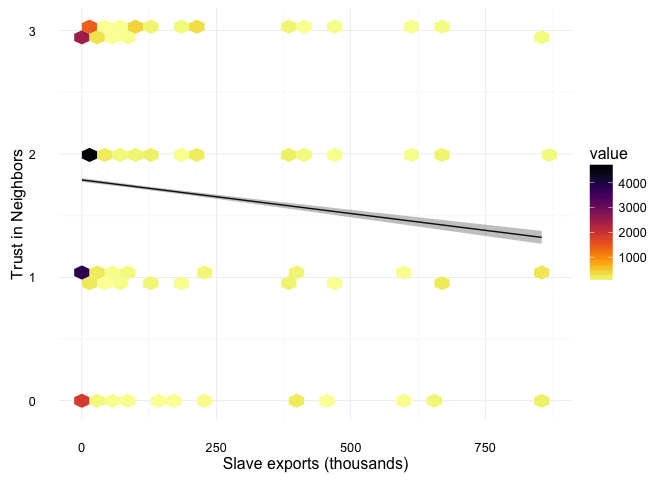
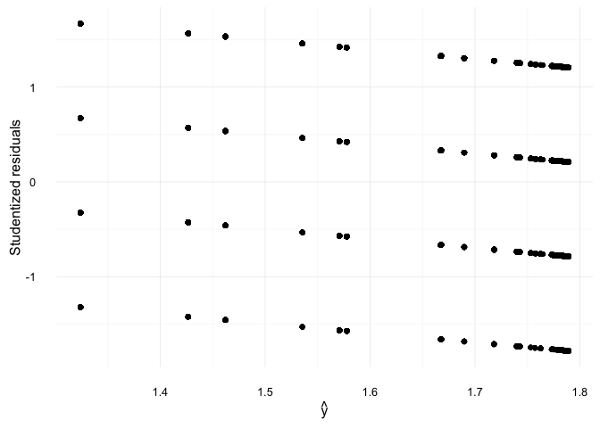
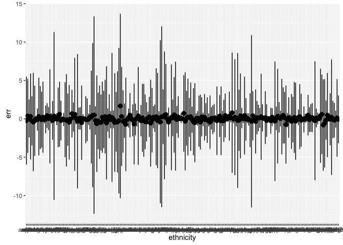
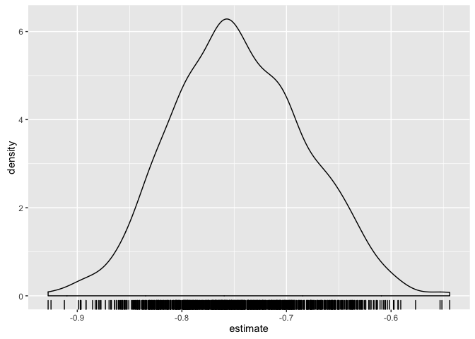
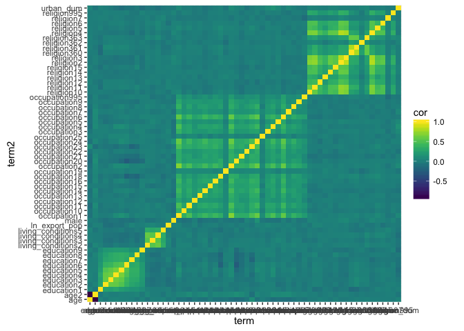

Instructions
solutions.Rmd.To update your fork from the upstream repository:
https://github.com/jrnold/Assignment_03 click on “New Pull request”jrnold/Assignment_03 as the base fork on the left, and UW-POLS503/Assignment_03 as the head fork on the right. In both cases the branch will be master. This means, compare any canes in the head fork that are not in the base fork. You will see differences between the US-POLS503 repository and your fork. Click on “Create Pull Request”, and if there are no issues, “Click Merge” A quick way is to use this link, but change the jrnold to your own username: https://github.com/jrnold/Assignment_03/compare/master...UW-POLS503:master.We’ll use these packages,
library("foreign")
library("dplyr")
library("broom")
library("tidyr")
library("ggplot2")
library("viridis")
library("stringr")
library("DT")Since we are going to do some simulation, we should set a seed, so the results are exactly replicable.
set.seed(1234)Since some of these computations will take time, we can cache the results so that knitr will only run code that has changed.
knitr::opts_chunk$set(cache = TRUE, autodep = TRUE)Let’s run some regressions from
Nunn, Nathan and Leonard Wantchekon. 2011. “The Slave Trade and the Origins of Mistrust in Africa.” American Economic Review, 101(7):3221-52. doi:10.1257/aer.101.7.3221
The replication data for the is available from its AER site, but the main dataset is included in this repository. Since the main dataset is a Stata .dta file load it using the read.dta function and convert it to a dplyr tbl so the print function produces nicer output.
nunn <- read.dta("Nunn_Wantchekon_AER_2011.dta") %>% tbl_df()There are many variables in this data. When read.dta converts a Stata data file the descriptions of the variables end up in an R attribute "var.labels". Print out the variable labels to get the descriptions of the files1
data_frame(variable = names(nunn), description = attr(nunn, "var.labels")) %>%
datatable(class = 'cell-border stripe')In Table 1, NW run several models with Trust in Neighbors as an outcome variable, different measures of slave exports as the treatment variable, and the same set of controls variables. Some of the relevant variables in the data are:
trust_neighbors: Trust of neighborsexports: Slave exports in 1000sage, age2, male, urban_dum, education, occupation, religion, living_conditionsdistrict_ethnic_frac, frac_ethnicity_in_districtisocodeNote that NW use education, occupation, religion, and living_conditions as factor variables. Convert them accordingly,
factor_vars <- c("education", "occupation", "religion", "living_conditions")
for (i in factor_vars) {
nunn[[i]] <- factor(nunn[[i]])
}Run a regression of the Trust of Neighbors on Slave exports. This is Table 1, Model 1, without any of the control variables.
mod_1_0 <- lm(trust_neighbors ~ exports, data = nunn)exports.summary()? Explain the meaning of the p-value. Be precise. Is the p-value the probability that the null hypothesis is correct?An increase of thousand slave exports from an ethnic group is associated with an expected -510^{-4} decrease in trust in neighbors on a scale of 0–3. This effect is statistically significant (\(p < -.001\)).
summary(mod_1_0)##
## Call:
## lm(formula = trust_neighbors ~ exports, data = nunn)
##
## Residuals:
## Min 1Q Median 3Q Max
## -1.7891 -0.7889 0.2109 1.2109 1.6761
##
## Coefficients:
## Estimate Std. Error t value Pr(>|t|)
## (Intercept) 1.789e+00 7.719e-03 231.77 <2e-16 ***
## exports -5.441e-04 3.343e-05 -16.28 <2e-16 ***
## ---
## Signif. codes: 0 '***' 0.001 '**' 0.01 '*' 0.05 '.' 0.1 ' ' 1
##
## Residual standard error: 1.003 on 20578 degrees of freedom
## (1242 observations deleted due to missingness)
## Multiple R-squared: 0.01271, Adjusted R-squared: 0.01267
## F-statistic: 265 on 1 and 20578 DF, p-value: < 2.2e-16In order to plot the fitted values against the scatterplot, I use broom::augment() with a newdata argument to calculate predicted values for each value of exports from the minimum to the maximum.
mod_1_0_fitted <-
augment(mod_1_0,
newdata = data_frame(exports = seq(min(nunn$exports, na.rm = TRUE),
max(nunn$exports, na.rm = TRUE),
length.out = 100)))Now I plot the predicted values of the regression, the 95% confidence interval, and the original data. Since there are over 20,000 observations that only take a few values of trust_neighbors, a scatter plot will not work well since there will be a lot of overplotting. There are several options to deal with this (alpha, jittering), but for this example I will use hexagon binning; which is like a 2D histogram. I also use the viridis color scale.
ggplot() +
geom_line(data = mod_1_0_fitted,
mapping = aes(x = exports, y = .fitted)) +
geom_ribbon(data = mod_1_0_fitted,
mapping = aes(x = exports, y = .fitted,
ymin = .fitted - 2 * .se.fit,
ymax = .fitted + 2 * .se.fit),
alpha = 0.3) +
geom_hex(data = na.omit(select(nunn, exports, trust_neighbors)),
aes(x = exports, y = trust_neighbors)) +
ylab("Trust in Neighbors") +
xlab("Slave exports (thousands)") +
scale_fill_viridis(direction = -1, option = "inferno") +
theme_minimal()
The first noticeable thing about the residuals is that they are arranged in lines; this is a result of the discrete values that the outcome variable takes.
ggplot(augment(mod_1_0), aes(x = .fitted, y = .std.resid)) +
geom_point() +
ylab("Studentized residuals") +
xlab(expression(hat(y))) +
theme_minimal() Since the outcome variable is bounded at 0 and 3, the residuals are not symmetric. However, since the fitted values only cover a range between 1 and 2, these asymmetry is not too great. Although we are using an OLS regression for a discrete and bounded outcome variable, this does not appear to be too big of an issue.
The null hypothesis of the t-test reported by summary.lm() is \(\beta_{\mathtt{exports}} = 0\). The \(p\)-value is the probability of observing a \(t\)-statistic equal to or more extreme than what was observed in the sample under repeated samples drawn from the same population, if the null hypothesis were true. No, the \(p\)-value is not the probability that the null hypothesis is correct. In Frequentist statistics, only samples have probabilities, hypotheses do not have a probability associated with them. They are either true of false, but the truth value is unknown. Even in Bayesian inference, the \(p\)-value gives the probability of the data given the hypothesis, and to calculate the probability of the hypothesis given the data we would need the prior probability of the null hypothesis.
Frequentist statistics assigns no probabilities to hypotheses (parameter values). They are either true or false, but they are unknown. Only samples are random variables, and have an associated probability. But as scientists, we are generally interested in the probability that a hypothesis is correct.2 The probability that the research hypothesis (\(H_0\)) is correct can be calculated with Bayes law, \[ p(H_0 | \text{data}) = \frac{p(\text{data} | H_0) p(H_0)}{p(\text{data} | H_a) p(H_a) + p(\text{data} | H_0) p(H_0)} = \frac{p(\text{data} | H_0) p(H_0)}{p(\text{data})} \] Working somewhat informally, the p-value gives \(p(\text{data} | H_0)\). An important missing piece of information is the baseline or prior probability that the null hypothesis is true, \(p(H_0)\), which is the complement of the probability that the research hypothesis is true, \(p(H_0) = 1 - p(H_a)\),3 4
Anything in the article which increases the plausibility of their theory, e.g. prior literature and the mechanisms of their theory, increases the prior probability of the research hypothesis, \(p(H_a)\). This is the difference between this paper, and a paper which tests ESP.
P-value hacking makes is so that the probability of the observing the data in the paper does not depend on the truth of the hypothesis which would generate these data. In other words the probability of observing a statistically significant result is 1, \(p(\text{data}) = 1\). This means that a p-hacked paper should have no affect on our beliefs about a hypothesis since there is no relationship between the data observed and the truth of the hypotheses.
In the models in Table 1, NW includes control variables to account for individual, district, and country-level variables that may explain differences.
Run the model in Table 1, Model 1:
mod_1_1 <- lm(trust_neighbors ~
exports +
# controls
# individual level
age + age2 + male + urban_dum + education +
occupation + religion + living_conditions +
# district-level
district_ethnic_frac + frac_ethnicity_in_district +
# country-level
isocode,
data = nunn)
tidy(mod_1_1) %>% filter(term == "exports")## term estimate std.error statistic p.value
## 1 exports -0.000679136 4.855134e-05 -13.988 2.986858e-44exportsmodel.matrix to produce the \(X\) matrix, and %*% to multiply matrices. Confirm that you get the same results as using predict().trust_neighbors as the value of exports changes? What is different about the multiple regression case than the bivariate case?An increase of one thousand exported slaves is associated with an expected decrease of -710^{-4} in the response to trust in neighbors, controlling for individual, district, and country level differences.
The regression coefficients in the version with and without controls are not too different, -0.0005 vs. -0.00067. Coefficient statibility to the inclusion of control variables is used as a heuristic for the potential importance of OVB. More formally, Nunn and Wantchekon use the method developed in Bellows and Miguel (2009) in the Section " Using Selection on Observables to Assess the Bias from Unobservables" on p. 3237. The statistic itself is simple: \(\hat{\beta}_f / (\hat{\beta}_r - \hat{\beta}_f)\) where \(\hat{\beta}_f\) is the coefficient from the full regression (including controls), and \(\hat{\beta}_r\) is the coefficient from the restricted regession (excluding controls):
```r
beta_f <- coef(mod_1_1)[["exports"]]
beta_r <- coef(mod_1_0)[["exports"]]
beta_f / (beta_r - beta_f)
```
```
## [1] -5.030797
```
The interpretation of this is that the covariation between the omitted variables and slave exports would have to be five times larger than the covariation between slave exports and the controls included in this regression. The \(R^2\) and number of observations match those reported in the table.
round(summary(mod_1_1)$r.squared, 2)## [1] 0.16length(fitted(mod_1_1))## [1] 20027I had meant to ask whether the standard errors also match those reported in Table 1, but I moved that to a later question. They do not. The coefficients match, but the standard errors are much smaller for the reasons discussed below.
The purpose of asking you to calculate the fitted values manually is so that you understand some of the matrix algebra in You can calculate the design matrix, \(X\), of a regression in R using model.matrix(). This will expand the formula for the regression, e.g. turning factors into dummy variables, and return a numeric matrix.
X <- model.matrix(mod_1_1)
beta <- coef(mod_1_1)Now calculate \[ \hat{y} = X \hat\beta = \begin{bmatrix} \hat\beta_0 \cdot 1 + \hat\beta_1 x_{1,1} + \dots + \hat\beta_{K,1} \\ \hat\beta_0 \cdot 1 + \hat\beta_1 x_{1,2} + \dots + \hat\beta_{K,2} \\ \vdots \\ \hat\beta_0 \cdot 1 + \hat\beta_1 x_{1,N} + \dots + \hat\beta_{K,N} \end{bmatrix}. \]
yhat <- X %*% beta
head(yhat)## [,1]
## 1 1.342690
## 2 1.259782
## 3 1.322990
## 4 1.292238
## 5 1.379541
## 6 1.411596We can check that these are the fitted values,
all.equal(fitted(mod_1_1), as.numeric(yhat), check.attributes = FALSE)## [1] TRUENote, I use all.equal so that the comparison will allow the two vectors to be nearly equal (something which should always be done with floating point numbers due to rounding error). The argument check.attributes ignores that one vector has names and the other does not, because we only care that they have the same numerical values.
If we were to plot the fitted values against exports in a scatter plot we would have to consider how to handle the control variables. Without control variables we could plot the fitted values of the regresion directly against actual data. Each fitted value has different values of \(x\). One way would be to plot the fitted values at representative values of the control varaibles, e.g. means of numeric variables, and modes of factor variables. Alternatively, we could average over all the control variables. If you are only interested in how well the regresion fits at different values of the outcome variable, plotting the residuals may make more sense.
Regress regression of trust_neighbors on the controls.
lm(trust_neighbors ~ age + age2 + male + urban_dum +
education + occupation + religion + living_conditions +
district_ethnic_frac + frac_ethnicity_in_district +
isocode, data = nunn)##
## Call:
## lm(formula = trust_neighbors ~ age + age2 + male + urban_dum +
## education + occupation + religion + living_conditions + district_ethnic_frac +
## frac_ethnicity_in_district + isocode, data = nunn)
##
## Coefficients:
## (Intercept) age
## 1.2782704 0.0075983
## age2 male
## -0.0000494 0.0510032
## urban_dum education1
## -0.1594966 0.0314458
## education2 education3
## -0.0630473 -0.1524498
## education4 education5
## -0.2019640 -0.2016031
## education6 education7
## -0.2532422 -0.3039204
## education8 education9
## -0.1425985 -0.2725780
## occupation1 occupation2
## 0.0722063 0.0731181
## occupation3 occupation4
## 0.0671592 0.0017896
## occupation5 occupation6
## 0.0755122 -0.0961679
## occupation7 occupation8
## 0.0097435 -0.0844278
## occupation9 occupation10
## -0.1037941 -0.0384627
## occupation11 occupation12
## -0.0526848 -0.1604573
## occupation13 occupation14
## -0.0245484 -0.0751694
## occupation15 occupation16
## -0.2297423 -0.0190316
## occupation18 occupation19
## -0.1800131 -0.1489991
## occupation20 occupation21
## -0.0270935 -0.0447961
## occupation22 occupation23
## -0.1016604 -0.1085771
## occupation24 occupation25
## 0.0244322 0.0074535
## occupation995 religion2
## -0.0097963 0.0440370
## religion3 religion4
## 0.0687563 0.0363079
## religion5 religion6
## 0.0258377 -0.0674540
## religion7 religion10
## 0.0140030 0.0458754
## religion11 religion12
## 0.2831639 0.3086493
## religion13 religion14
## -0.0681065 0.0398328
## religion15 religion360
## 0.3993899 0.3862733
## religion361 religion362
## 0.3569926 0.8240821
## religion363 religion995
## 0.3506265 0.0436281
## living_conditions2 living_conditions3
## 0.0607460 0.1020260
## living_conditions4 living_conditions5
## 0.1325637 0.1290344
## district_ethnic_frac frac_ethnicity_in_district
## -0.0024118 0.0659809
## isocodeBWA isocodeGHA
## -0.0435570 0.2208941
## isocodeKEN isocodeLSO
## 0.2128326 -0.1743453
## isocodeMDG isocodeMLI
## 0.0415341 0.3224215
## isocodeMOZ isocodeMWI
## 0.3998523 0.6573224
## isocodeNAM isocodeNGA
## 0.2552472 -0.0343237
## isocodeSEN isocodeTZA
## 0.6881418 0.5813355
## isocodeUGA isocodeZAF
## 0.3183201 0.1903093
## isocodeZMB
## 0.1647789Run the regression of exports on the controls. Save the residuals
lm(exports ~ age + age2 + male + urban_dum +
education + occupation + religion + living_conditions +
district_ethnic_frac + frac_ethnicity_in_district +
isocode, data = nunn)##
## Call:
## lm(formula = exports ~ age + age2 + male + urban_dum + education +
## occupation + religion + living_conditions + district_ethnic_frac +
## frac_ethnicity_in_district + isocode, data = nunn)
##
## Coefficients:
## (Intercept) age
## 5.268e+02 4.930e-01
## age2 male
## -1.232e-03 -8.449e+00
## urban_dum education1
## 2.193e+01 -2.029e+01
## education2 education3
## 1.316e+01 1.896e+01
## education4 education5
## 1.466e+01 2.174e+01
## education6 education7
## 1.637e+01 2.564e+01
## education8 education9
## 4.026e+01 2.111e+01
## occupation1 occupation2
## -1.099e+01 1.060e+00
## occupation3 occupation4
## -4.647e+01 1.212e+01
## occupation5 occupation6
## -9.407e+00 2.202e+01
## occupation7 occupation8
## 8.466e+00 -1.202e+01
## occupation9 occupation10
## 3.097e+00 8.044e+00
## occupation11 occupation12
## 3.405e+01 5.352e+00
## occupation13 occupation14
## 1.027e+01 2.911e+01
## occupation15 occupation16
## 8.852e+00 1.109e+01
## occupation18 occupation19
## 9.393e+00 -2.134e+01
## occupation20 occupation21
## 1.883e+00 -3.606e+00
## occupation22 occupation23
## 1.847e-01 1.650e+01
## occupation24 occupation25
## -1.229e+01 2.250e+01
## occupation995 religion2
## 1.806e+01 1.171e+01
## religion3 religion4
## 1.014e+01 1.003e+01
## religion5 religion6
## 2.173e+01 6.620e+01
## religion7 religion10
## -1.158e+01 2.063e+01
## religion11 religion12
## -8.100e+01 -4.966e+01
## religion13 religion14
## -2.220e+00 6.279e+00
## religion15 religion360
## -1.339e+01 -2.778e+01
## religion361 religion362
## -1.940e+01 2.301e+00
## religion363 religion995
## 5.226e+01 -6.394e+00
## living_conditions2 living_conditions3
## -2.191e+01 -1.940e+01
## living_conditions4 living_conditions5
## -1.454e+01 -1.207e+01
## district_ethnic_frac frac_ethnicity_in_district
## -2.092e+01 4.512e+01
## isocodeBWA isocodeGHA
## -5.665e+02 -2.831e+02
## isocodeKEN isocodeLSO
## -5.781e+02 -5.537e+02
## isocodeMDG isocodeMLI
## -5.499e+02 -3.761e+02
## isocodeMOZ isocodeMWI
## -4.699e+02 -5.187e+02
## isocodeNAM isocodeNGA
## -5.783e+02 -3.052e+02
## isocodeSEN isocodeTZA
## -4.525e+02 -5.523e+02
## isocodeUGA isocodeZAF
## -5.656e+02 -5.908e+02
## isocodeZMB isocodeZWE
## -5.660e+02 -6.162e+02exports from the regression in Table 1, Model 1? What does that say about what multiple regression is doing?For OLS standard errors to be unbiased each disturbance must have the same variance, \(\Var(\varepsilon_i) = \sigma^2\), and all disturbances must be uncorrelated, \(\Cov(\varepsilon_i, \varepsilon_j) = 0\) if \(i \neq j\).
The answers of individuals in the same country, ethnicity, district, or living in close geographic proximity may be correlated even after controlling for the variables included in these models.
There wasn’t a particularly good way to do this. The idea was to get an intuition that clustered standard errors means that groups have correlated residuals. In this case, it is likely that individuals within ethnicities or districts are correlated.
ggplot(augment(mod_1_1, data = nunn) %>%
group_by(ethnicity) %>%
summarize(err = mean(.std.resid),
std.err = mean(.std.resid) / (sd(.std.resid) / sqrt(n())), obs = n()) %>%
filter(obs > 5),
aes(x = ethnicity, y = err, ymin = err - 2 * std.err, ymax = err + 2 * std.err)) + geom_pointrange()
In Table 1 (p. 3232), three types of standard errors are reported
The standard errors reported in Table 1 are much larger than those in the OLS regression that we ran earlier. The reason is that the classical OLS errors do not account for correlation within these clusters. Effectively, by ignoring that correlation we are pretending we have many more observations that we do. See A Practitioner’s Guide to Cluster-Robust Inference or the discussion of clustered standard errors in Angrist and Pischke “Mostly Harmless Econometrics”. The easiest way to implement cluster robust errors in R is to use the plm package.
Run the regression in Table 1, model 6, which uses “log(1 + exports / pop)” as a measure of slave exports.
mod_1_6 <- lm(trust_neighbors ~ ln_export_pop +
age + age2 + male + urban_dum + education +
occupation + religion +
living_conditions + district_ethnic_frac +
frac_ethnicity_in_district + isocode,
data = nunn) ln_export_pop on trust_neighborsRoughly, a one percentage point increase in slave exports in an ethnic groups is associated with an expected decrease of 0.0074 (-0.74/100) in the the response for trust in neighbors of members of that ethnicity, controlling for individual, district, and country characteristics.
Many ethnicities have values of zero for slave exports, and \(\log(0)\) is undefined. Adding a small positive number is a common way to adjust variables that seem to have a logarithmic (decreasing returns) effect, but include zeros.
The rest of this question was somewhere between poorly worded and incoherent. My intent was to have you plot the functional forms in each regression.
Let’s understand what the confidence intervals mean in terms of the sampling distribution. Since we don’t know the true parameter values for this, we will pretend that the OLS point estimates from the regression are the “true” population parameters.
The plan to generate a sampling distribution of \(\beta\) is:
iter times, store \(\beta^*\) for each iteration, and return the estimates for all samples.Then, the distribution of the \(\beta^*\) is a sampling distribution of the parameters.
Why is only \(\vec{y}\) being samples? Why is \(\mat{X}\) fixed in these simulations? See Wooldridge Ch 2 and 3 discussion of the assumptions of OLS.
The standard assumptions for regression assume fixed values of \(\mat{X}\). However, regression will work for random \(\mat{X}\) if \(\mat{X}\) is uncorrelated with the disturbances \(\vec{\varepsilon}\).
Let’s take the results of the model on ln_export_pop and explore the sampling distribution of \(\beta\) from that model.
First run the model,
mod <- lm(trust_neighbors ~ ln_export_pop +
age + age2 + male + urban_dum + education +
occupation + religion +
living_conditions + district_ethnic_frac +
frac_ethnicity_in_district + isocode,
data = nunn, na.action = na.exclude)The argument na.action = na.exclude ensures that when we calculate residuals, etc. they will be padded with missing values so they are the same length as the original nunn data. There are other ways to work around this, but this makes the code to run the simulations easier, especially the step that draws y_hat.
Extract the values of the parameter estimates, \(\hat{\beta}\), the model matrix, \(X\),the regression standard error, \(\hat{\sigma}\), and the number of observations, \(N\).
y_hat <- predict(mod, na.action = na.exclude)
sigma <- sqrt(sum(residuals(mod) ^ 2, na.rm = TRUE) / mod$df.residual)
n <- nrow(nunn)Later we’ll also need the original Choose a number of iterations to run. For this example use 1,024.
iter <- 1024Create a list to store the results
results <- vector(mode = "list", length = iter)For iterations 1 ... iter we cant to
p <- progress_estimated(iter, min_time = 2)
for (i in seq_len(iter)) {
# draw errors
errors <- rnorm(n, mean = 0, sd = sigma)
# create new outcome variable from errors
nunn[["trust_neighbors_new"]] <- y_hat + errors
# Replace the dependent variable with the newly sampled y
newmod <- lm(trust_neighbors_new ~ ln_export_pop +
age + age2 + male + urban_dum + education +
occupation + religion +
living_conditions + district_ethnic_frac +
frac_ethnicity_in_district + isocode,
data = nunn)
# Formula objects are manipulable in R. So a more general
# way to do the above is to alter the formula from the model
# by replacing trust_neighbors ~ ... with trust_neighbors_new ~ ...
# formula <- formula(mod$terms)
# formula[[2]] <- "trust_neighbors_imputed"
# # check that this worked
# # print(formula)
# # Also this should be put outside the loop, since it doesn't
# # change
# newmod <- lm(formula, data = nunn)
# Save the coefficients as a data frame to the list
results[[i]] <- tidy(newmod) %>% mutate(.iter = i)
# Progress bar update
p$tick()$print()
}
# clean up: remove the new variable
nunn[["trust_neighbors_new"]] <- NULLFinally, since results is a list of data frames, stack the data frames in the list to form a single data frame that is easier to analyze:
results <- bind_rows(results)Note: this will take a few minutes.
Use the results of this simulation to answer the following questions:
ln_export_pop.ln_export_pop? How does this compare to the standard error of this coefficient given by lm()?spread in which the rows are iterations, the columns are coefficients, and the values are the estimates.geom_raster. Are the coefficients uncorrelated? In general, when would coefficients be more or less correlated?The sampling distribution of \(\hat{\beta}_{\mathtt{ln\_export\_pop}}\) is approximately normal and centered at its OLS value of around -0.75.
ggplot(filter(results, term == "ln_export_pop"),
aes(x = estimate)) +
geom_density() + geom_rug()
The standard deviation of the estimated sampling distribution of the coefficient of ln_export_pop is
filter(results, term == "ln_export_pop") %>%
magrittr::extract2("estimate") %>%
sd()## [1] 0.06328606This is close to the standard standard error reported in the regression,
filter(tidy(mod), term == "ln_export_pop")## term estimate std.error statistic p.value
## 1 ln_export_pop -0.7434568 0.06460478 -11.50777 1.551239e-30The bootstrap is generating values assuming that the estimated model is the “true” model. But in order to calculate a p-value you need to generate the sampling distribution assuming that the null hypothesis is true.
beta_cor <- filter(results,
term %in% c("ln_export_pop", "age", "age2", "male", "urban_dum") |
str_detect(term, "education") |
str_detect(term, "occupation") |
str_detect(term, "living_conditions") |
str_detect(term, "religion")) %>%
select(term, estimate, .iter) %>%
rename(iter = .iter) %>%
spread(term, estimate, -iter) %>%
select(-iter) %>%
cor() %>%
tidy() %>%
rename(term = .rownames) %>%
gather(term2, cor, -term)
ggplot(beta_cor, aes(x = term, y = term2, fill = cor)) +
geom_raster() +
scale_fill_viridis() The \(\beta\) coefficients are not uncorrelated. We can also observe this in the estimated variance-covariance matrix from the regression,
cov2cor(vcov(mod)[1:6, 1:6])## (Intercept) ln_export_pop age age2
## (Intercept) 1.00000000 -0.296892726 -0.540483926 0.509289743
## ln_export_pop -0.29689273 1.000000000 -0.013298893 0.004992375
## age -0.54048393 -0.013298893 1.000000000 -0.975296583
## age2 0.50928974 0.004992375 -0.975296583 1.000000000
## male -0.07803927 0.029867740 -0.001162037 -0.025516600
## urban_dum -0.05286134 -0.045585417 0.012435687 -0.018532057
## male urban_dum
## (Intercept) -0.078039269 -0.05286134
## ln_export_pop 0.029867740 -0.04558542
## age -0.001162037 0.01243569
## age2 -0.025516600 -0.01853206
## male 1.000000000 0.01914562
## urban_dum 0.019145621 1.00000000The previous question was an example of parametric bootstrap. It is a parametric bootstrap because you drew data from an assumed model (the OLS model that you estimated).
An alternative is a non-parametric bootstrap. In a non-parametric bootstrap, instead of drawing samples from model, we are going to redraw samples from the sample.
An analogy is that the sample is to the population as the bootstrap is to the sample. We are treating the sample distribution as an estimate of the population distribution and then drawing samples from that estimated population distribution.
To do the bootstrapping we will use the bootstrap function in the tidyr package. However, the boot package supports many more advanced methods of bootstrapping.
Let’s start by drawing a single bootstrap replication. It is a sample of the same size as the original data, drawn from the data with replacement.
nunn_bootstrapped <- bootstrap(nunn, 1)So, in order to calculate bootstrap standard errors, we will need to draw a sample of To get bootstrap standard errors, we draw B replications, run an regression, and save the estimates.
mod_bs <- lm(trust_neighbors ~ ln_export_pop, data = nunn)
beta_bs <-
bootstrap(nunn, 1024) %>%
do(tidy(lm(trust_neighbors ~ ln_export_pop, data = .)))There are several ways to calculate standard errors from the bootstrap replications. The following are two simple methods.
Calculate the standard error from these simulations by taking the standard deviation of the estimates. Suppose \(\beta^{*b}_k\) is the estimated coefficient from replication \(b \in 1:B\), and \(\bar\beta^{*}_k = (\sum \beta^{*b}_k) / B\). Then the bootstrap standard error is, \[ \se_k(\hat\beta_{k}) = \sqrt{\frac{1}{B - 1} \sum (\beta^{*b}_k - \bar\beta^{*b}_k)^2} \] The confidence interval is thus, \[ \hat{\beta}_k \pm \se_{bs}(\hat\beta_k) \] Note that you use the estimate \(\hat{\beta}_k\) from the original model, not the mean of the bootstrap estimates. This method works well if the sampling distribution of \(\beta_k\) is symmetric.
The second method is to use the quantiles of the bootstrap estimates. E.g. a 95% confidence interval uses the 2.5% and 97.5% quantiles of the bootstrap estimates. This method allows for asymmetric confidence intervals. However, it takes more replications to get accurate values of extreme quantiles than it does to calculate a standard deviation.
The confidence interval using the bootstrap standard errors is,
# OLS estimate
betahat <- coef(mod_bs)[["ln_export_pop"]]
z <- 1.96
filter(beta_bs, term == "ln_export_pop") %>%
ungroup() %>%
summarize(se = sd(estimate)) %>%
mutate(conf.low = betahat - z * se,
conf.high = betahat + z * se)## Source: local data frame [1 x 3]
##
## se conf.low conf.high
## (dbl) (dbl) (dbl)
## 1 0.04459353 -0.4833508 -0.3085442The confidence interval using bootstrap quantiles is,
# OLS estimate
filter(beta_bs, term == "ln_export_pop") %>%
ungroup() %>%
summarize(conf.low = quantile(estimate, 0.025),
conf.high = quantile(estimate, 0.975))## Source: local data frame [1 x 2]
##
## conf.low conf.high
## (dbl) (dbl)
## 1 -0.4772805 -0.3139828In this case the two methods produce similar confidence intervals, since the sampling distribution of \(\hat\beta\) is symmetric. These confidence interval are also similar to those produced by OLS.
confint(mod_bs)## 2.5 % 97.5 %
## (Intercept) 1.7619152 1.7949429
## ln_export_pop -0.4825835 -0.3093115This is somewhat disappointing. Bootstrapping in this manner does not help us produce confidence intervals accounting for the clustering that produces larger standard errors. The reason is that we are sampling from the “population”. In order to account for the correlation within clusters, we would need to account for the way that the sample was generated from the population. There are several ways to bootstrap with clustering. The most important part is to randomly sample ethnicities from the set of ethnicities.
There are even more advanced methods such as the studentized bootstrap, and the adjusted bootstrap percentile (BCa) methods included in boot.ci.
For bootstrapped standard errors to be valid, the samples from the data need to be taken in the same way as the sample was taken from the population. For example, in a time series it would be inappropriate to sample observations without accounting for their order.
group_by argument of bootstrap.See above.
The instructions given were too simplistic, and this requires more complicated code than I thought when writing it. The group_by argument for bootstrap() allows for sampling within the clusters, but we need to sample the clusters themselves.
ethnicities <- select(nunn, ethnicity) %>% unique()
iter <- 1024
bs_samples <- list()
for (i in seq_len(iter)) {
# Resample ethnic groups
ethnic_sample <- sample_frac(ethnicities, 1, replace = TRUE)
# Merge with Nunn data to get a new dataset
newdata <- left_join(ethnic_sample, nunn, by = "ethnicity")
bs_samples[[i]] <- tidy(lm(trust_neighbors ~ ln_export_pop, data = newdata))
}
bs_samples <- bind_rows(bs_samples)
bs_samples %>%
filter(term == "ln_export_pop") %>%
ungroup() %>%
summarize(conf.low = quantile(estimate, 0.025),
conf.high = quantile(estimate, 0.975),
se = sd(estimate))## Source: local data frame [1 x 3]
##
## conf.low conf.high se
## (dbl) (dbl) (dbl)
## 1 -0.807128 0.3850288 0.3199544Now the confidence interval and standard errors are much larger than those reported by OLS, and the bootstrapping that did not account for clusters.
An \(F\)-test tests the null hypothesis that several coefficients in the regression are all 0 vs. the alternative that at least one of the coefficients is non-zero. Suppose you want to test that the \(q\) coefficients \(\beta_j\) through \(\beta_{j + q}\) are all 0, \[ \begin{aligned}[t] H_0: &\quad \beta_j = \dots = \beta_J = 0 H_a: &\quad \text{at least one $\beta_k \neq 0$} \end{aligned} \]
To run an F-test in R, use the anova() function to compare two models. For example, to compare the regression of trust_neighbors on exports without controls to the regression with controls, use
mod_1_0 <- lm(trust_neighbors ~ ln_export_pop, data = nunn)
mod_1_1 <- lm(trust_neighbors ~ ln_export_pop + age + age2 + male + urban_dum +
education + occupation + religion + living_conditions +
district_ethnic_frac + frac_ethnicity_in_district +
isocode, data = nunn)
anova(mod_1_0, mod_1_1)## Error in anova.lmlist(object, ...): models were not all fitted to the same size of datasetWe can’t do it! At least not yet. The problem is that lm() drops all rows with at least one missing value. So mod_1_0 and mod_1_1 run a regression on datasets with different numbers of observations,
mod_1_0$df.residual + length(mod_1_0$coefficients)## [1] 18112mod_1_1$df.residual + length(mod_1_1$coefficients)## [1] 17644The residual degrees of freedom is \(N - K - 1\), and the length of the coefficient vector is \(K + 1\), so their sum is the number of observations in the regression, \((N - K - 1) + (K + 1) = N\).
To ensure that these models are run on the same set of data, create a subset of the nunn data that has all the variables in the larger model, and drop an observations with missing values in any of those variables, using na.omit().
nunn_nomiss <- nunn %>%
select(trust_neighbors, ln_export_pop, age, age2, male, urban_dum,
education, occupation, religion, living_conditions,
district_ethnic_frac, frac_ethnicity_in_district,
isocode) %>%
na.omit()Now, we can compare the models,
mod_1_0 <- lm(trust_neighbors ~ ln_export_pop, data = nunn_nomiss)
mod_1_1 <- lm(trust_neighbors ~ ln_export_pop + age + age2 + male + urban_dum +
education + occupation + religion + living_conditions +
district_ethnic_frac + frac_ethnicity_in_district +
isocode, data = nunn_nomiss)
anova(mod_1_0, mod_1_1)## Analysis of Variance Table
##
## Model 1: trust_neighbors ~ ln_export_pop
## Model 2: trust_neighbors ~ ln_export_pop + age + age2 + male + urban_dum +
## education + occupation + religion + living_conditions + district_ethnic_frac +
## frac_ethnicity_in_district + isocode
## Res.Df RSS Df Sum of Sq F Pr(>F)
## 1 17642 17251
## 2 17566 14777 76 2473.7 38.693 < 2.2e-16 ***
## ---
## Signif. codes: 0 '***' 0.001 '**' 0.01 '*' 0.05 '.' 0.1 ' ' 1The p-value for the F-test is approximately 0, so the test rejects the null hypothesis that all the control variables are equal to 0 at all commonly used levels of significance.
Run an F-test comparing the model with only controls to the one in Model 1, Table 6. In other words, the null hypothesis is \(\beta_{\mathtt{ln\_exports\_pop}} = 0\).
mod_controls <- lm(trust_neighbors ~ age + age2 + male + urban_dum +
education + occupation + religion + living_conditions +
district_ethnic_frac + frac_ethnicity_in_district +
isocode,
data = select(nunn, trust_neighbors, age, age2,
male, urban_dum, education, occupation, religion, living_conditions, district_ethnic_frac,
frac_ethnicity_in_district, isocode,
ln_export_pop) %>% na.omit())
mod_1_6 <- lm(trust_neighbors ~ ln_export_pop + age + age2 + male + urban_dum +
education + occupation + religion + living_conditions +
district_ethnic_frac + frac_ethnicity_in_district +
isocode, data = nunn)ln_export_pop? Square the t-statistic for the coefficient of ln_export_pop; how does it compare to the F-statistic? What is the relationship between a t-test and an F-test for a single parameter in a regression?F-tests can only compare nested models on the same data. The models in Table 1 are not nested, because they are not subsets of each other. Each model uses a different measure of slave exports. The \(p\)-value of the test of a single coefficient and the equivalent \(F\)-test are the same. The \(F\)-statistic is the square of the p-value.
anova(mod_controls, mod_1_6)## Analysis of Variance Table
##
## Model 1: trust_neighbors ~ age + age2 + male + urban_dum + education +
## occupation + religion + living_conditions + district_ethnic_frac +
## frac_ethnicity_in_district + isocode
## Model 2: trust_neighbors ~ ln_export_pop + age + age2 + male + urban_dum +
## education + occupation + religion + living_conditions + district_ethnic_frac +
## frac_ethnicity_in_district + isocode
## Res.Df RSS Df Sum of Sq F Pr(>F)
## 1 17567 14888
## 2 17566 14777 1 111.4 132.43 < 2.2e-16 ***
## ---
## Signif. codes: 0 '***' 0.001 '**' 0.01 '*' 0.05 '.' 0.1 ' ' 1tvalue <- tidy(mod_1_6) %>% filter(term == "ln_export_pop") %>%
magrittr::extract2("statistic")
tvalue## [1] -11.50777tvalue ^ 2 ## [1] 132.4287This uses the DT package to produce pretty interactive tables in the HTML.↩
See the discussion in (Scientific method: Statistical errors)[http://www.nature.com/news/scientific-method-statistical-errors-1.14700], Nature.↩
Assuming, for simplicity, that \(H_0\) and \(H_a\) are the only hypotheses so that \(p(H_0) + p(H_a) = 1\).↩
This question is non-standard and idiosyncratic to the way I interpret research. Additionally, this analysis is heuristic and not intended to be a formal Bayesian hypothesis test.↩